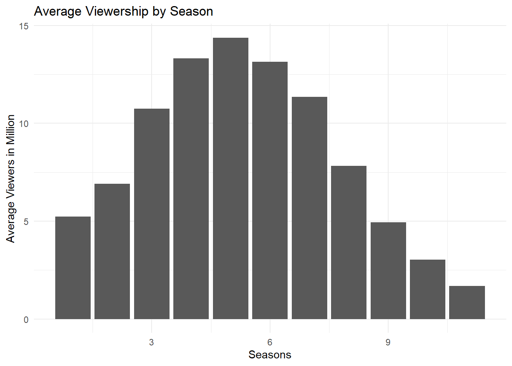

The Walking Dead (TV series)
Description
The Walking Dead is an American post-apocalyptic horror drama television series based on the comic book series of the same name by Robert Kirkman, Tony Moore, and Charlie Adlard—together forming the core of The Walking Dead franchise. The series features a large ensemble cast as survivors of a zombie apocalypse trying to stay alive under near-constant threat of attacks from zombies known as “walkers” (among other nicknames). With the collapse of modern civilization, these survivors must confront other human survivors who have formed groups and communities with their own sets of laws and morals, sometimes leading to open, hostile conflict between them. The series is the first television series within The Walking Dead franchise.

Ratings
The Walking Dead TV Series has 11 seasons it first aired on October 31th of 2010 and the last episode aired on November 20th of 2022. Overall series got 8.1/10 from IMDb, 79% from Rotten Tomatoes and 4/5 from Common Sense Media.
| Season | Episodes | First aired | Last aired |
|---|---|---|---|
| 1 | 6 | October 31, 2010 | December 5, 2010 |
| 2 | 13 | October 16, 2011 | March 18, 2012 |
| 3 | 16 | October 14, 2012 | March 31, 2013 |
| 4 | 16 | October 13, 2013 | March 30, 2014 |
| 5 | 16 | October 12, 2014 | March 29, 2015 |
| 6 | 16 | October 11, 2015 | April 3, 2016 |
| 7 | 16 | October 23, 2016 | April 2, 2017 |
| 8 | 16 | October 22, 2017 | April 15, 2018 |
| 9 | 16 | October 7, 2018 | March 31, 2019 |
| 10 | 22 | October 6, 2019 | April 4, 2021 |
| 11 | 24 | August 22, 2021 | November 20, 2022 |
Viewership
During its first season, The Walking Dead attracted between four and six million viewers.[275] Viewership began to increase in its second season. During seasons three to seven, it attracted ten to seventeen million viewers.[275] In 2012, during its third season, it became the first cable series in television history to have the highest total viewership of any series during the fall season among 18- to 49-year-old adults.[275][276] In 2014, total viewership for the show’s fifth-season premiere was 17.3 million, making it the most-watched series episode in cable history.[277][278] In 2016, a New York Times study of the 50 television series with the most Facebook likes found that like most other zombie series, The Walking Dead “is most popular in rural areas, particularly southern Texas and eastern Kentucky”.[279] Ratings began to decline during season seven and have continued to steadily drop, which was blamed on a variety of factors, including Rick’s presumed death. By the end of season nine, fewer viewers were watching than at any time since the show’s first season.[280]

The most viewed episode of the series is 17.29 Million viewers in US and this episode was from season 5 and 1 episode.